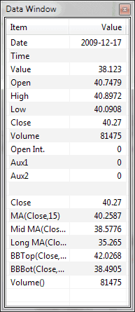

Data window can be displayed using Window->Data Window menu The Data Window shows the date/time and values of open, high, low, close, volume, open interest, aux1 and aux2 of the bar under the mouse cursor. It also shows mouse cursor Y-coordinate ("Value") expressed in terms of price corresponding to current mouse cursor location. The Data Window also shows the values of all indicators defined in the formula. These values are automatically updated when cursor stops moving for a fraction of a second.
|
 |